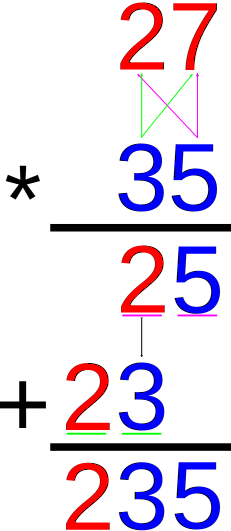
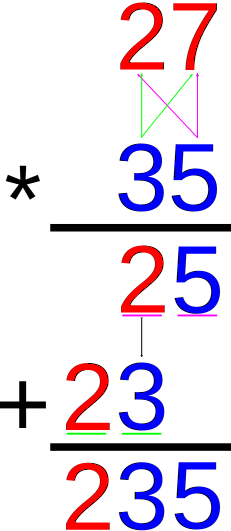

モジュール詳細：間引き
数字は嘘つかない。いやつくかもしれない。
大変だ。
ディスプレーには数字が2つ表示され、横には演算子が表示される。計算した結果をキーパッドを使用して入力して送信する。これを3ステージ行う。
- ステージ1は加算である。
- ステージ2は1桁の乗算である。
- ステージ3は乗算である。
ただし、このモジュールの欠陥により、モジュールは特殊な計算方法「月の算術」を使用している。
2つの数字を加算すると、2つの数字のそれぞれの桁の高い方が使用される。
2つの数字を乗算すると、それぞれの桁のうち低い方を使用する。
交換法則、結合法則、分配法則が成り立つことに注意する(つまりa×(b+c) = a×b + a×c)。

 
